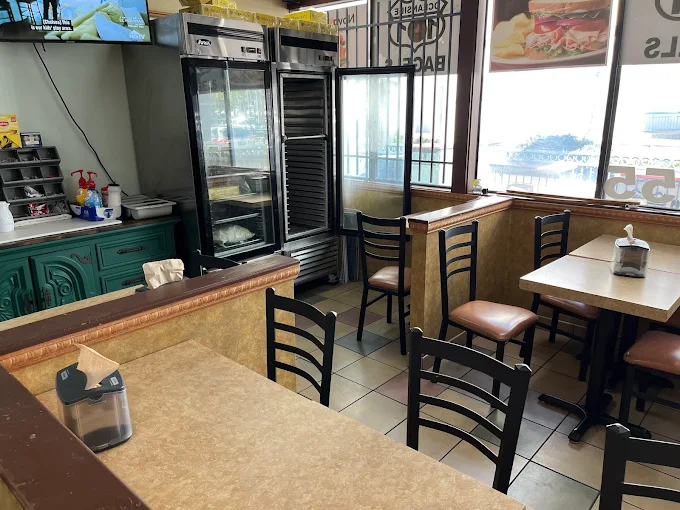

About 101 Bagel

How'd we start?
101 Bagels & Subs began with a simple idea: to bring fresh, handcrafted food and a sense of community to Oceanside. What started as a small family shop soon became a local favorite known for its made-from-scratch bagels, sandwiches, and friendly atmosphere. The name “101” honors the iconic California highway—a symbol of connection and good food. From the start, every bagel has been boiled and baked the traditional way, while our sandwiches feature quality meats, cheeses, and locally sourced ingredients.
The Goal
At 101 Bagels & Subs, our mission is to serve food that feels both familiar and memorable, ensuring every visit to our shop is an experience that delights the senses and brings comfort to our customers. We aim to create a space where people of all ages can enjoy simple, high-quality meals made with care and attention to detail. Whether someone stops in for a morning coffee, a quick lunch, a weekend breakfast, or a casual meeting with friends, we want them to feel welcome, valued, and at home.
Beyond providing delicious food, our goal is to strengthen the sense of community within Oceanside and the surrounding areas. Each bagel, sandwich, and beverage is prepared with the intent of bringing people together over meals that are thoughtfully made, fresh, and satisfying. We strive to offer not just sustenance, but also a sense of connection, encouraging neighbors, families, and visitors to gather, share stories, and create lasting memories at our shop.
We also focus on sustainability and supporting local suppliers whenever possible, sourcing fresh ingredients from local farms and bakeries to ensure the highest quality and reduce our environmental footprint. This commitment extends to both the taste and the ethics of our food, reflecting our belief that good food should be responsibly sourced, wholesome, and accessible.
As we continue to grow, we remain committed to innovation without sacrificing authenticity. New menu items, seasonal offerings, and creative specials are introduced thoughtfully to maintain the consistency and quality that our patrons expect. Our goal is to balance tradition with creativity, ensuring that while our food evolves with trends and customer preferences, the essence of what makes 101 Bagels & Subs special—care, quality, and community—remains unchanged.
Ultimately, our purpose is to create more than just a place to eat: we want 101 Bagels & Subs to be a destination where individuals feel a sense of belonging, enjoy exceptional food, and leave with a smile, looking forward to returning.
Michelle R.
Great and fast service! We ordered the open face Nova on an everything bagel which was perfect for me and my partner. The owner was kind and gave our pup a little treat. There are outdoor and indoor tables so we were able to enjoy our bagel with our pup in the outside patio.
Victor C.
The grub hub guy took it to the wrong apartment but they made me another one and didn’t charge me. I got the 2 meat egg and cheese bagel with sprouts, onions and cream cheese and it was sooooooooo delicious. I got the strawberry banana smoothie with it. Totally cured my hangover.
Michael B.
Had a couple bagels, Avocado toast on wheat, and a smoothie. Everybody raved about it. The food is great and tough to beat the prices.